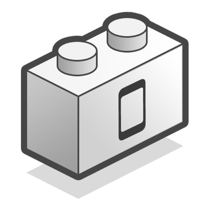
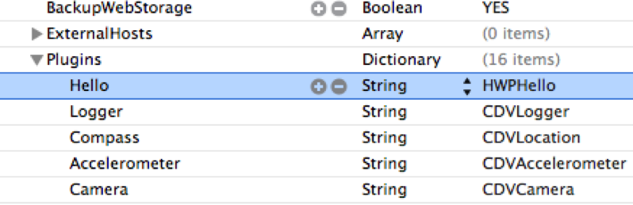

PhoneGap Plugins
PhoneGap Day Portland 2012
Don Coleman

- JavaScript
- Native
cordova.exec is the method that lets javascript call into native code each platform has their own implementation but the interface is the same * win - the success callback * fail - the error callback * service - the name of the service to use * action - the action to run in cordova * args - Zero or more arguments to pass to the method
cordova.exec(successCallback,
failureCallback,
service,
action,
args) cordova.exec(win,
fail,
service,
action,
args) var win = function (result) {
alert (result);
}
var fail = function (error) {
alert ("Error " + error)
}when we run cordova.exec it calls into our native plugin if the plugin is successful, it will call win with the String "Hello, World"
var service = "Hello",
action = "greet",
args = ["World"];
cordova.exec(win, fail,
service, action, args);it is fine to call cordova.exec directly typically a plugin provides wrapper javascript to make a nicer API for the plugins usually you'll see the success failure callbacks as the last parameters, since they are optional
var greet = function (name, win, fail) {
cordova.exec(win, fail,
"Hello", "greet", [name]);
}
greet("World", win, fail);TODO make sure this works!
cordova.define("cordova/plugin/hello",
function (require, exports, module) {
var exec = require('cordova/exec');
function greet(name, win, fail) {
exec(win, fail, "Hello",
"greet", [name]);
}
module.exports = {
greet: greet
}
}
);<? xml ... >
Android - res/xml/config.xml
Blackbery - www/plugins.xml
<plugin name="Hello"
value="com.example.plugin.Hello"/>iOS - Cordova.plist
<dict>
<key>Hello</key>
<string>HWPHello</string>
</dict>- org.apache.cordova.api.Plugin
import org.apache.cordova.api.Plugin
public class Hello extends Plugin {
public PluginResult execute(
String action,
JSONArray args,
String callbackId)PluginResults sends data back to Javascript PluginResult.Status tells Cordova how to process the result. Message can be String, JSONArray or JSONObject PluginResult is how data goes from the native code back to JavaScript
new PluginResult(Status.OK, message);TODO REMOVE THIS SLIDE
new PluginResult(Status.IO_EXCEPTION);
new PluginResult(Status.NO_RESULT);Won't compile
public PluginResult execute(
String action,
JSONArray args,
String callbackId) {
String name = args.getString(0);
String message = "Hello, " + name;
return new PluginResult(
Status.OK, message);
}args is a JSONArray and throws a JSONException add a try catch Note if Cordova gets Status.JSON_EXCEPTION the fail callback is called instead of success
try {
String name = args.getString(0);
String message = "Hello, " + name;
return new PluginResult(
Status.OK, message);
} catch (JSONException e) {
return new PluginResult(
Status.JSON_EXCEPTION);
}the previous code will work (but omits error and bounds checking) We are also ignoring the action that was called For a java plugin, all actions go through the one execute method Plugins typically have multiple actions, so we need to check which action was called If we get an unexpected action, we return an INVALID_ACTION status which called the fail callback
public PluginResult execute(
String action,
JSONArray args,
String callbackId) {
if (action.equals("greet")) {
// ...
} else if (action.equals("leave")) {
// ...
} else {
return new PluginResult(
Status.INVALID_ACTION);
}
}config.xml
<?xml version="1.0" encoding="utf-8"?>
<cordova>
<!-- ... -->
<plugins>
<plugin name="App"
value="org.apache.cordova.App"/>
<!-- ... -->
<plugin name="Hello"
value="com.example.plugin.Hello"/>
</plugins>
</cordova>implementation is complete compile and run the code

Thank Fil for example
public PluginResult execute(String action,
JSONArray args, String callbackId) {
this.callbackId = callbackId;
PluginResult result =
new PluginResult(Status.NO_RESULT);
result.setKeepCallback(true);
return result;
}private void someNativeInvocation() {
JSONObject data = // ...
PluginResult result =
new PluginResult(Status.OK, data);
this.success(result, this.callbackId);
}the concepts for iOS are the same but the implementation is a bit different implement CDVPlugin create instance methods for each action ObjectiveC XCode .notes Plugin Directory will exist if you've created your project with the cordova command line scripts

- CDVPlugin
#import <Cordova/CDVPlugin.h>
@interface HWPHello : CDVPlugin
- (void) greet:(NSMutableArray*)arguments
withDict:(NSMutableDictionary*)opt;
@end#import <Cordova/CDVPlugin.h>
@interface HWPHello : CDVPlugin
- (void) greet:(NSMutableArray*)arguments
withDict:(NSMutableDictionary*)opt;
- (void) leave:(NSMutableArray*)arguments
withDict:(NSMutableDictionary*)opt;
@endid is the callbackId note that in iOS we need to use the callbackId and decide to call success or failure
- (void)greet:(NSMutableArray*)args ...
{
NSString* id = [args objectAtIndex:0];
NSString* name = [args objectAtIndex:1];
NSString* msg = [NSString
stringWithFormat: @"Hello, %@", name];
CDVPluginResult* result = [
CDVPluginResult
resultWithStatus:CDVCommandStatus_OK
messageAsString:msg];
[super success:result callbackId:id];
}
CDVPluginResult* result = // ...
NSString* javaScript =
[result toSuccessCallbackString:id];
[self writeJavascript:javaScript]- BaseCommand
namespace Cordova.Extension.Commands
{
public class Hello : BaseCommand
{
public void greet(string args)
{
string name = JsonHelper
.Deserialize<string>(args);
string message = "Hello, " + name;
PluginResult result =
new PluginResult(
PluginResult.Status.OK,
message);
DispatchCommandResult(result);
} } }add to script * Maintaining plugins for multiple platforms * Building, Packaging and Distributing plugins. * Installing (apt-get | npm for plugins?) * Making plugins work with PhoneGap build * https://github.com/alunny/cordova-plugin-spec
Future
Plugin Spec
<plugin xmlns= ...
id="com.example.hello"
version="0.9.0">
<name>Hello</name>
<asset src="www/hello.js"
target="hello.js" />
<platform name="ios">
<header-file src="HWPHello.h" />
<source-file src="HWPHello.m" />
<plugins-plist key="Hello"
string="HWPHello" />
</platform>
<platform name="android">
...
</platform>
</plugin>pluginstall
- pluginstall PLATFORM PROJECT PLUGIN
- pluginstall ios . ~/plugins/Hello
* start writing code * read the Cordova source * read the Plugin source (some will be dated)
Go Build a Plugin
TODO add a link to these slides on github
PhoneGap Plugins
Don Coleman
don@chariotsolutions.com
http://github.com/don
@doncoleman